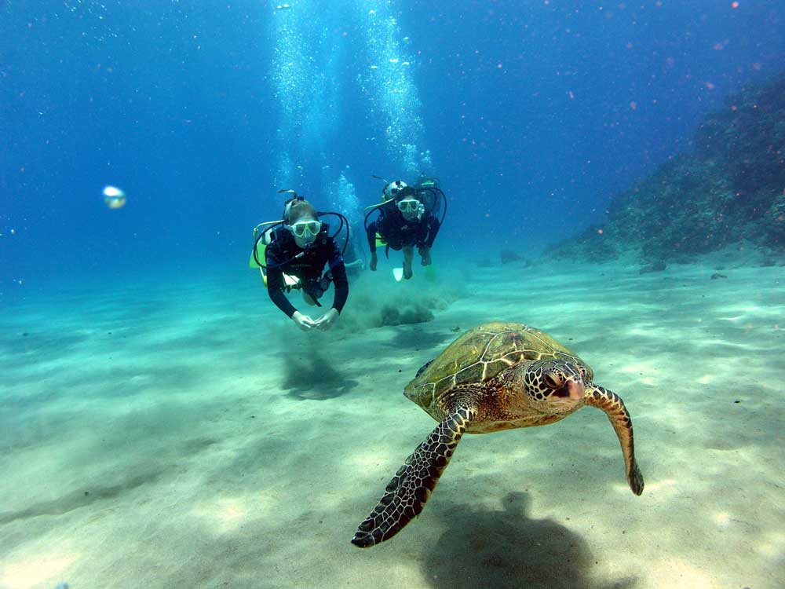

We are Kauai scuba diving at its finest!
Garden Isle Divers is the best way to spend time underwater on your vacation! We are a family owned and operated business that strives to meet and surpass your expectations. Book now to plan a personalized scuba experience where you will get to explore the underwater world of Kaua'i.
Book NowA myriad of options
When you book with Garden Isle Divers you have multiple options. Here are some ways we can help you make your trip to Kauai unforgettable:
Kaua'i Shore Scuba Tours
Don’t let the fact that you or a family member/friend aren’t certified keep you from experiencing the adventure of ocean exploration. Our highly trained and experienced professional dive instructors will guide you through the short and simple learning process needed to ensure your success while on the greatest adventure you’ve experienced – shore diving Kaua'i. You will come face to face with Green Sea Turtles, a variety of eels, and lots of beautiful tropical fish.
More InfoKaua'i Boat Scuba Tours
Garden Isle Divers’ boat dives are the best way for certified divers to see Kaua'i’s premier diving sites. Two tank boat diving remains the most popular charter and diving experience that we have to offer. We have many diving sites within easy reach of Port Allen, each one showcasing unique topography and rare marine life. We limit our boat trips to 6 passengers for your comfort above and below the water. This makes for a much more personal charter and sets the stage for epic underwater encounters with shy marine species. Small diving groups enable us to custom-tailor a dive day to your interests and level of experience. Join us for the best Kaua'i scuba diving adventure.
More InfoKauai Scuba Dive Training
We offer the full range of PADI training from Open Water through Divemaster.
Want to travel and explore the world? Live a life of breathtaking adventure? Know firsthand the incredible beauty of the underwater world but you aren’t scuba certified? We can help you fix that! Visit our Training page to learn more. How about earn a more advanced level of scuba certification or train for a dive specialty? Garden Isle Divers will help you achieve your dreams! Instead of scheduling regular classes, we offer training “on demand”. Let us know what your goals are and we will create a program just for you.
If you are planning a trip to Kaua'i, plan on spending a morning with us scuba diving and exploring the vibrant reef that surrounds this unique and special place. Whether you prefer the casual and relaxing nature of a shore dive or the great possibilities offered by a boat dive, let us get you underwater and show you why we love diving Kaua'i – The Garden Isle.
Meet our Team!
Eric - Divemaster
I am our divemaster and occasional boat captain. I will be the one leading you on both boat and shore dives. I like fish and nudibranchs and that's about it.
Carrie - Boat Captain
I was born in Southern California and raised on a big property in the hills of Temecula Wine Country. My brother & I grew up riding motorcycles & taking trips to the Colorado River. My childhood taught me to work hard & be tough. My husband & I have raised our kids in Hawai'i. We enjoy the ocean & an active lifestyle. I believe that there is nothing you can't accomplish if you really want it.
FAQs
Water temperatures are usually around 74-82°F, lower in March and higher in October.
We see lots of tropical fish, turtles, and healthy coral (with many rare species). We frequently see sharks (don't worry, they probably won't bite). We also see mantas, but that is much more rare.
Nope, no boat wreck sites at any of our available sites.
No, not ever! We keep safety at the top of our priorities and uncertified divers may not dive from the boat under any circumstance.
Unfortunately, we do not offer Ni'ihau dive trips at this time simply because of the 12-hour day it is.
Yes, however you will be on standby in case spaces fill up with regular divers. The one exception to this is if you book a private charter, in which case you can reserve however many seats you'd like for snorkelers.
The answer to this depends on divers' air consumption. We don't focus on the clock, we focus on the air gauge. If it is a 2-tank boat dive, we are usually back to the harbor about 12-1pm. Shore dives can go over an hour each if the divers are good on air.
Sorry, no transportation offered of any sort. Make sure you arrange transportation before the day of your trip!
Coming from Princeville (North Shore): ~80 minutes
Coming from Kapa'a (East Shore): ~40-50 minutes
Coming from Lihu'e: ~35 minutes
Coming from Po'ipu: ~15-20 minutes